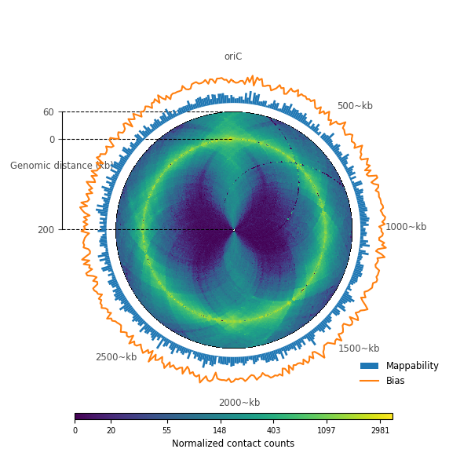

Note
Click here to download the full example code or to run this example in your browser via Binder
Using a different color map¶
Out:
<matplotlib.legend.Legend object at 0x7f211c6eaee0>
import numpy as np
from matplotlib import rc
import matplotlib.pyplot as plt
from circhic import datasets
from circhic import CircHiCFigure
from iced.normalization import ICE_normalization
# Load the data, compute the cumulative raw counts.
data = datasets.load_ccrescentus()
counts_raw = data["counts"]
lengths = data["nbins"]
cumul_raw_counts = counts_raw.sum(axis=0)
# Normalize the data using ICE, and keep the biases
counts, bias = ICE_normalization(counts_raw, output_bias=True)
# compute extreme values
vmax = np.max([counts[i, (i+1) % counts.shape[0]]
for i in range(counts.shape[0])])
vmin = np.min(counts[counts > 0])
# plotting the data
granularity = 0.5
resolution = 9958
fig = plt.figure(figsize=(6, 6))
inner_radius, outer_radius = 0.005, 0.75
inner_gdis, outer_gdis = 2000000, 600000
chrom_lengths = lengths * resolution
circhicfig = CircHiCFigure(chrom_lengths, figure=fig)
m, ax = circhicfig.plot_hic(counts, granularity=granularity,
resolution=resolution, outer_radius=outer_radius,
inner_radius=inner_radius, inner_gdis=inner_gdis,
outer_gdis=outer_gdis, vmin=vmin*100, vmax=vmax,
cmap="viridis", border_thickness=0.005)
rax = circhicfig.plot_raxis()
rax.set_yticklabels(["200", "0", "60"], fontsize="small")
rax.set_ylabel("Genomic distance (kb)", fontsize="small", color="0.3",
position=(0, 1.03))
rax.tick_params(colors="0.3")
# Assume you want to plot data from that ranges in a polar plot outside of the
# first one. Then the 0 axis should be at, say, 80% of the axis
bar, _ = circhicfig.plot_bars(
cumul_raw_counts, inner_radius=0.8, outer_radius=0.9,
color="C0")
# Now, plot another plot, for the top 10% of the original axes
lines, _ = circhicfig.plot_lines(
bias, color="C1", inner_radius=0.9, outer_radius=1)
cab = circhicfig.set_colorbar(m, orientation="horizontal")
cab.set_label("Normalized contact counts", fontsize="small")
ticklabels = ["%d~kb" % (i * 500) for i in range(6)]
tickpositions = [int(i*500000) for i in range(6)]
ticklabels[0] = "oriC"
ax = circhicfig.set_genomic_ticklabels(
tickpositions=tickpositions,
ticklabels=ticklabels,
outer_radius=1, fontdict={'fontsize': "small"})
ax.tick_params(colors="0.3")
fig.legend((bar, lines[0]), ("Mappability", "Bias"), fontsize="small",
bbox_to_anchor=(0.8, 0.1, 0.15, 0.15), frameon=False)
Total running time of the script: ( 0 minutes 1.809 seconds)